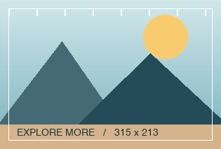

BROWSER-237377 · DESKTOP
Картинки. Границы.
Восемь положений.
Стенд для проверки настоящей панели Яндекс Браузера. Наведите курсор на картинку — сайт не имитирует панель и не перехватывает перетаскивание.
HOST СТРАНИЦА DPR
Как проверять и что означают ожидания
Включите --enable-features=ImageButtonsRedesign3,ImageButtonsAnimation. В актуальном чек-листе указаны пороги 315×213; исходное описание 311×200 оставлено отдельной группой. Надпись «проходит размер» означает только проверку геометрии: доступность панели также зависит от настроек, конфига и сборки.
- Переместите панель в четыре угла и середины четырёх сторон. Проверьте Esc, переключение окна и отпускание за картинкой.
- Перейдите на страницу B, откройте вторую вкладку или Split View, перезагрузите и перезапустите браузер. Позиция должна сохраниться по host страницы.
- Скройте панель через её меню и восстановите сайт в настройках браузера. Должна вернуться прежняя позиция.
- Повторите границы с масштабом браузера 80%, 125%, 150%. DPR не равен масштабу браузера; CSS zoom ниже — отдельный сценарий.
Выбор запасной зоны при обрезании относится к BROWSER-237387. Здесь не задаётся ожидаемый fallback. Для серверного списка исключений нужен сайт из фактического конфига браузера.
01 / Свободное перемещение
PNG · JPEG · WebPБелая рамка — ориентир отступа 12 px внутри самого изображения. По краям карточки нет обрезающих контейнеров.
02 / Граничные размеры
Размеры фиксированы в CSS px, без адаптивного уменьшения. На узком окне используйте горизонтальную прокрутку всей страницы.
03 / Обрезающие контейнеры
OVERFLOW: HIDDENУ всех картинок оригинал 960×640 и отображаемый размер 600×400. Меняется только размер контейнера.
04 / Контексты и масштаб
IFRAME · SHADOW DOM · ZOOMIframe того же host
CSS zoom

05 / Другой host и внешний источник
Смена пути или порта не заменяет смену host. Для независимых позиций нужны разные hostname. При локальном запуске ссылки ниже ведут на тот же сервер через поддомены localhost.
Внешний ресурс задаётся вручную. Его доступность и размеры проверяйте по диагностике ниже.